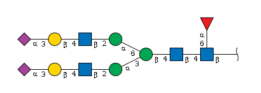
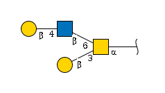
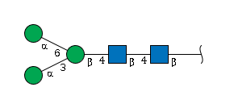

Decoding Glycans: Your Guide to IUPAC-Condensed Format
Source:vignettes/articles/iupac.Rmd
iupac.RmdWelcome to the fascinating world of glycan notation! If you’ve ever looked at a glycan structure and wondered, “How on earth do I turn this beautiful tree-like molecule into text?”, you’re in exactly the right place. Today we’re diving into IUPAC-condensed format — the goldilocks of glycan notation that’s “just right” for most glycomics work.
The Tower of Babel: Why So Many Glycan Formats? 🏗️
Picture this: you’re at an international conference, and everyone is speaking a different language. That’s exactly what happened in the glycomics world! Different communities developed their own ways to describe glycans, each optimized for their specific needs.
Let’s take a famous N-glycan as our example:

The same molecule, many faces:
The Human-Friendly Version (IUPAC-condensed):
Neu5Ac(a2-3)Gal(b1-4)GlcNAc(b1-2)Man(a1-3)[Neu5Ac(a2-3)Gal(b1-4)GlcNAc(b1-2)Man(a1-6)]Man(b1-4)GlcNAc(b1-4)[Fuc(a1-6)]GlcNAc(b1-The Chemistry Professor’s Dream (IUPAC-extended):
α-D-Neup5Ac-(2→3)-β-D-Galp-(1→4)-β-D-GlcpNAc-(1→2)-α-D-Manp-(1→3)[α-D-Neup5Ac-(2→3)-β-D-Galp-(1→4)-β-D-GlcpNAc-(1→2)-α-D-Manp-(1→6)]-β-D-Manp-(1→4)-β-D-GlcpNAc-(1→4)[α-L-Fucp-(1→6)]-β-D-GlcpNAc-(1→The Computer’s Favorite (WURCS):
WURCS=2.0/6,12,11/[a2122h-1b_1-5_2*NCC/3=O][a1122h-1b_1-5][a1122h-1a_1-5][a2112h-1b_1-5][Aad21122h-2a_2-6_5*NCC/3=O][a1221m-1a_1-5]/1-1-2-3-1-4-5-3-1-4-5-6/a4-b1_a6-l1_b4-c1_c3-d1_c6-h1_d2-e1_e4-f1_f3-g2_h2-i1_i4-j1_j3-k2The Chemical Database’s Language (InChI):
InChI=1S/C90H148N6O66/c1-21-47(116)59(128)62(131)81(142-21)140-20-40-69(55(124)43(77(135)143-40)93-24(4)108)152-78-44(94-25(5)109)56(125)66(36(16-103)148-78)153-82-63(132)72(156-86-76(61(130)51(120)33(13-100)147-86)158-80-46(96-27(7)111)58(127)68(38(18-105)150-80)155-84-65(134)74(53(122)35(15-102)145-84)162-90(88(138)139)9-29(113)42(92-23(3)107)71(160-90)49(118)31(115)11-98)54(123)39(151-82)19-141-85-75(60(129)50(119)32(12-99)146-85)157-79-45(95-26(6)110)57(126)67(37(17-104)149-79)154-83-64(133)73(52(121)34(14-101)144-83)161-89(87(136)137)8-28(112)41(91-22(2)106)70(159-89)48(117)30(114)10-97/h21,28-86,97-105,112-135H,8-20H2,1-7H3,(H,91,106)(H,92,107)(H,93,108)(H,94,109)(H,95,110)(H,96,111)(H,136,137)(H,138,139)/t21-,28-,29-,30+,31+,32+,33+,34+,35+,36+,37+,38+,39+,40+,41+,42+,43+,44+,45+,46+,47+,48+,49+,50+,51+,52-,53-,54+,55+,56+,57+,58+,59+,60-,61-,62-,63-,64+,65+,66+,67+,68+,69+,70+,71+,72-,73-,74-,75-,76-,77+,78-,79-,80-,81+,82-,83-,84-,85-,86+,89-,90-/m0/s1Feeling dizzy yet? 😵💫 That’s completely normal! Each format serves its purpose:
- 🧑🔬 IUPAC formats: Perfect for humans to read and understand
- 🤖 WURCS/GlycoCT: Optimized for computers and databases
- 🔗 Semantic formats: Great for linking data across platforms
- ⚗️ Chemical formats: Ideal for rigorous chemical analysis
Why We Chose IUPAC-Condensed for glyrepr 🎯
When we were building the glycoverse, we faced a classic
engineering decision: which format should be our “native language”?
After much deliberation (and probably too much coffee ☕), we settled on IUPAC-condensed because it hits the sweet spot:
✅ Human-readable: You can actually understand what
you’re looking at
✅ Information-rich: Contains everything you need for
most glycomics analyses
✅ Widely used: The glycomics community knows and loves
it
✅ Flexible: Works for both simple and complex
structures
Think of it as the “Python of glycan formats” — powerful yet approachable!
Mastering IUPAC-Condensed: A Step-by-Step Journey 🗺️
Step 1: The Building Blocks — Monosaccharide Symbols
Every glycan is built from monosaccharide units, and IUPAC gives each one a memorable abbreviation:
| Full Name | Symbol | Think of it as… |
|---|---|---|
| Galactose | Gal |
“Galaxy sugar” |
| Glucose | Glc |
“Glcucose” (easy!) |
| Mannose | Man |
“Mannose” |
| N-Acetylglucosamine | GlcNAc |
“Glc + NAc” |
| Fucose | Fuc |
“Fucose” |
💡 Pro tip: Check out the SNFG website for the complete symbol library — it’s like a cheat sheet for glycan notation!
Step 2: The Decorations — Substituents
Just like proteins can have post-translational modifications, glycans can have their own decorations! These are called substituents.
Think of substituents as “accessories” for your monosaccharides:
-
Neu5Ac9Ac= A sialic acid wearing an extra acetyl group at position 9 -
Glc3Me= A glucose sporting a methyl group at position 3 -
GlcNAc6Ac= An N-acetylglucosamine with bonus acetylation at position 6
Format rule: Position number + Modification
type
Example: 6Ac = “acetyl group at position 6”
Step 3: The Connections — Linkage Information
This is where the magic happens! 🪄 Linkages tell us how monosaccharides are connected to each other.
The anatomy of a linkage:
MonosaccharideA(anomeric_config + anomeric_position - target_position)MonosaccharideBLet’s decode Neu5Ac(a2-3)Gal:
-
Neu5Acis connected toGal - The anomeric carbon of
Neu5Acis in alpha configuration (a) - The connection is from position 2 of
Neu5Ac - To position 3 of
Gal
Real-world analogy: Think of it like describing how LEGO blocks connect: “The red block connects from its 2nd peg (in up position) to the 3rd socket of the blue block.”
When life gets uncertain 🤷♀️: Sometimes we don’t know
all the details, so we use ? as a wildcard:
-
a2-?= “We know it’s alpha-2, but not sure where it connects” -
??-3= “It connects to position 3, but the anomeric info is unclear”
Step 4: The Architecture — Topological Structure
Now comes the fun part: turning a branched tree structure into a linear string! It’s like giving directions to a complex building.
The golden rules:
- Find the longest backbone (like the main hallway)
- Everything else is a branch (like rooms off the hallway)
- Branches go in square brackets
[] - Write branches just before the monosaccharide they connect to
Example 1: A Simple O-Glycan 🌿

Step-by-step construction:
-
Identify the main chain:
Gal → GlcNAc → GalNAc -
Add linkage info:
Gal(b1-4)GlcNAc(b1-6)GalNAc(a1- -
Spot the branch: The bottom
Galconnects toGalNAc -
Insert the branch:
Gal(b1-4)GlcNAc(b1-6)[Gal(b1-3)]GalNAc(a1-
Final result:
Gal(b1-4)GlcNAc(b1-6)[Gal(b1-3)]GalNAc(a1-Example 2: The Famous N-Glycan Core 🌟

The plot twist: Two chains of equal length! Which one becomes the main chain?
IUPAC’s tie-breaker rule: When chains are equal, choose the one that creates branches with lower position numbers.
Analysis: - Option A: Man(a1-6) branch
→ position 6 - Option B: Man(a1-3) branch → position 3
Winner: Option B (lower number = 3)
Final result:
Man(a1-3)[Man(a1-6)]Man(b1-4)GlcNAc(b1-4)GlcNAc(b1-Step 5: The Root Mystery — Anomeric Information
You might wonder: “Why does the last monosaccharide end with
(b1- instead of a complete linkage?”
Great question! 🤔 The root monosaccharide (rightmost) doesn’t
connect to anything further, so its anomeric carbon is “free.” The
format (xy- tells us about its anomeric state without a
target.
Put Your Skills to the Test! 🧪
Ready to become an IUPAC-condensed master? Time for some hands-on practice!
Challenge: Look at the complex N-glycan at the beginning of this article and try to write its IUPAC-condensed string yourself. Don’t peek at the answer!
Hint: Start by identifying the main chain, then work on the branches one by one.
Test your answer:
# Try your hand-written string here!
my_attempt <- "Your_IUPAC_string_here"
# This will tell you if it's valid
tryCatch({
result <- as_glycan_structure(my_attempt)
cat("🎉 Congratulations! Your IUPAC string is valid!\n")
print(result)
}, error = function(e) {
cat("🔧 Oops! There might be a small issue. Keep trying!\n")
cat("Error:", e$message, "\n")
})
#> 🔧 Oops! There might be a small issue. Keep trying!
#> Error: Could not parse IUPAC-condensed string: "Your_IUPAC_string_here"Congratulations, You’re Now Glycan-Literate! 🎓
You’ve just mastered one of the most important skills in
computational glycomics: reading and writing IUPAC-condensed notation.
This knowledge will serve you well as you explore the
glycoverse and analyze glycan structures.
What you’ve learned:
- 🧬 Why different glycan formats exist and when to use them
- 🔤 How to decode monosaccharide symbols and substituents
- 🔗 The logic behind linkage notation
- 🌳 How to convert tree structures into linear strings
- 🎯 The art of identifying main chains and branches
Next steps:
- Practice with more complex structures
- Explore the
glyreprpackage functions - Dive into glycan analysis with confidence!
Happy glycan hunting! 🕵️♀️✨
Session Information
sessionInfo()
#> R version 4.5.2 (2025-10-31)
#> Platform: x86_64-pc-linux-gnu
#> Running under: Ubuntu 24.04.3 LTS
#>
#> Matrix products: default
#> BLAS: /usr/lib/x86_64-linux-gnu/openblas-pthread/libblas.so.3
#> LAPACK: /usr/lib/x86_64-linux-gnu/openblas-pthread/libopenblasp-r0.3.26.so; LAPACK version 3.12.0
#>
#> locale:
#> [1] LC_CTYPE=C.UTF-8 LC_NUMERIC=C LC_TIME=C.UTF-8
#> [4] LC_COLLATE=C.UTF-8 LC_MONETARY=C.UTF-8 LC_MESSAGES=C.UTF-8
#> [7] LC_PAPER=C.UTF-8 LC_NAME=C LC_ADDRESS=C
#> [10] LC_TELEPHONE=C LC_MEASUREMENT=C.UTF-8 LC_IDENTIFICATION=C
#>
#> time zone: UTC
#> tzcode source: system (glibc)
#>
#> attached base packages:
#> [1] stats graphics grDevices utils datasets methods base
#>
#> other attached packages:
#> [1] glyrepr_0.8.0.9000
#>
#> loaded via a namespace (and not attached):
#> [1] vctrs_0.6.5 cli_3.6.5 knitr_1.50 rlang_1.1.6
#> [5] xfun_0.54 stringi_1.8.7 textshaping_1.0.4 jsonlite_2.0.0
#> [9] glue_1.8.0 htmltools_0.5.8.1 ragg_1.5.0 sass_0.4.10
#> [13] rmarkdown_2.30 evaluate_1.0.5 jquerylib_0.1.4 fastmap_1.2.0
#> [17] yaml_2.3.10 lifecycle_1.0.4 stringr_1.6.0 compiler_4.5.2
#> [21] fs_1.6.6 systemfonts_1.3.1 digest_0.6.39 R6_2.6.1
#> [25] pillar_1.11.1 magrittr_2.0.4 bslib_0.9.0 tools_4.5.2
#> [29] pkgdown_2.2.0 cachem_1.1.0 desc_1.4.3